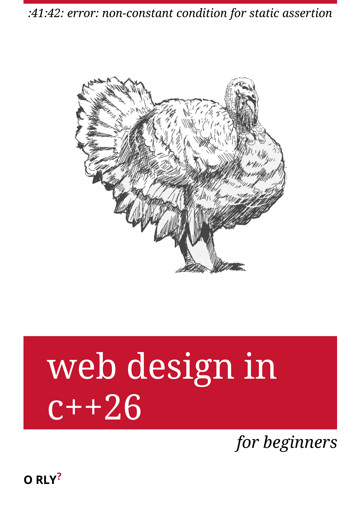

So, the problem is that I don’t really like writing HTML by hand, but I feel in this era of technology an overwhelming compulsion to make things with my hands. The thing I wanted was simple — a way to generate the featureless, dry homepage of this site from the posts that I’ve written — and the result, I think, is elegant:
inline constexpr post site_posts[]{ { "web design in c++26", std::chrono::August/1/2026, R"(or, <c style="font:10pt monospace">/usr/include/c++/16/span: In instantiation of </c>)" }, }; static constexpr auto index_entry(const post& p) { using namespace ml; using namespace css; using namespace std::string_view_literals; return a{ $style(css::$color = "inherit", $text_decoration = "none"), $href = p.encoded_name, ml::div{ $id = p.encoded_name, $style = post_item_style(), span{ $style($font_size = "1.25em", $font_weight = "bold"), p.hed }, span{ $style(css::$color = "gray", $white_space = "nowrap"), p.date }, ml::div{ $style = post_subhed_style(), p.subhed } } }; } template <class = void> constexpr auto post_list() { using namespace ml; using namespace css; using namespace std::string_view_literals; const auto& [...posts] = site_posts; return ml::div { $style($text_align = "left", $padding = "1em"), ml::div{ $style($padding = "2pt", $border_bottom = "1pt solid lightgray", css::$height = "1pt"), ""sv }, index_entry(posts)... }; }
The library is available here in an absolutely horrendous state, for the hecklers and masochists.
Let’s say our goal was the nebulous “make a webpage in C++.” There are plenty of libraries that would technically allow one to programmatically construct an HTML document (and if that’s what you want, pugixml is a good one), but for our purposes, that’s overkill. The text of this website is static, and we only need to regenerate our homepage occasionally, after making manual changes to the posts on the site. So, what if we instead made C++ code constructs that mirrored those in the HTML specification?
For example, to represent a link, the HTML element <a> element allows the attribute
href, so we could represent it in C++ like:
struct a { std::string href; };
and imitate the HTML syntax with designated initializers, like a link{ .href = "#" }.
But the <a> element permits far more attributes than just href — and, what’s
worse, some of these attributes have names which aren’t legal C++ identifiers (like
class) so our C++ type would have to look more like:
struct a { // attributes common to all elements attribute<"title", std::string_view> title; attribute<"lang", std::string_view> lang; attribute<"translate", bool> translate; attribute<"dir", std::string_view> dir; attribute<"hidden", std::variant<bool, double, std::string_view>> hidden; attribute<"inert", bool> inert; attribute<"innerText", std::string_view> innerText; attribute<"outerText", std::string_view> outerText; attribute<"class", std::string_view> className; attribute<"id", std::string_view> id; // attributes specific to anchor elements attribute<"href", std::string_view> href; attribute<"target", std::string_view> target; attribute<"download", std::string_view> download; attribute<"ping", std::string_view> ping; attribute<"rel", std::string_view> rel; attribute<"relList", ::ht::unimplemented> relList; attribute<"hreflang", std::string_view> hreflang; attribute<"type", std::string_view> type; attribute<"text", std::string_view> text; attribute<"referrerPolicy", std::string_view> referrerPolicy; // and so on };
Very quickly, we’ve ended up with a comically large and unwieldy object
that must be large enough to contain the values for all of these attributes,
even if we never use them (which is usually the case). Now, practically this
wouldn’t be a problem, but it would be deeply unsatisfying. Worse, designated
initializers can only be specified in the order that the corresponding data
members are defined, so a link{ .href="#" .id="anchor" } would be
ill-formed.
Famously, C++ is philosophically oriented towards the “zero-overhead principle,” that the language should not provide facilities which would incur a greater cost (in whatever sense) than the programmer writing the same code by hand. Now, it wouldn’t make sense to measure ourselves against writing twenty lines of HTML by hand, but we can reasonably expect our construct not to waste space in such a way.
We can interpret the zero-overhead principle in an even more extreme way. If the
best program that completes our task is the one that does it the most efficiently (as
fast a possible, with as few resources as possible) then the best possible program is
one that does nothing at all. C++ is known for its compile-time features, from
template metaprogramming to constexpr code, introduced with C++11, to static
reflection, introduced just now in C++26. With this in mind, we can also
ask that our program accomplish as much of its work at compile-time as
possible.
hell is empty, and all the std::meta::define_aggregates
are here
So, back to what we have: a{ $href = "#", "click here!"sv }.
template <class ...A> struct a: public element<a<A...>> { constexpr a(A&& ...a): a::element{ std::move(a)... } { } };
The value of the expression $href = "#" is an aspect. $href is an aspect generator,
declared as
inline constexpr aspect_generator<^^std::string_view, "href"> a;
When we write $href = "#", we’re really just abusing the copy assignment
operator:
template <std::meta::info VTp, static_string Name, auto Tag = []{}> struct aspect_generator { // ... template <class ...Args> constexpr decltype(auto) operator()(Args&& ...args) const { typename[:VTp:] r{ std::forward<Args>(args)... }; return aspect<decltype(r), aspect_generator>{ std::move(r) }; } template <class T> constexpr decltype(auto) operator=(T&& t) const { return this->operator()(std::forward<T>(t)); } // ...
Of all this nonsense, typename[:VTp:] r{ std::forward<Args>(args)... };
might be my favorite. In the example, where VTp is the type reflection
^^std::string_view, typename[:VTp:] is just std::string_view. But VTp doesn’t
have to be a type reflection.
Here’s an example from another project using the same code. When printing formatted output to the terminal, one can use -color mode, where the first colors are set by the user’s terminal theme and the remaining are a fixed color palette, or the direct mode, where one can specify a -bit RGB color. While most color terminals will support the former, usually only graphical terminals will support the latter.
enum color_mode { XTERM_256COLOR = 8, DIRECT = 24 }; template <color_mode Mode> struct color; // color<XTERM_256COLOR> holds one uint8_t, while color<DIRECT> holds three // ... // deduction guides: color(uint8_t) -> color<XTERM_256COLOR>; color(uint8_t, uint8_t, uint8_t) -> color<DIRECT>; inline constexpr aspect_generator<^^color, "fg"> $fg; inline constexpr aspect_generator<^^color, "bg"> $bg;
Now, we can write either $fg(1) for the
-color
red or $fg(255, 0, 0) for direct-color primary red with a uniform syntax! Inside the
aspect generator, VTp is a reflection of the template-name color, so after splicing, we
get color r{ std::forward<Args>(args)... }. Here, color is a placeholder-type
and, because of our user-defined deduction guides, is deduced to be either
color<XTERM_256COLOR> or color<DIRECT> depending on the number of
arguments.1
Constructed with an argument of type aspect<std::string_view, aspect_generator<(...)>>,
we trigger a specialization of element<A...> and its base classes, with_aspects<A...>
and with_children<A...>. We encounter the consteval block of each:
template <class... A> struct with_aspects_impl { struct aspects_impl; struct children_impl; consteval { std::vector<std::meta::info> mems; std::vector<std::meta::info> child_types; // this was originally an expansion statement but it causes a crash in clangd that i don't understand so we're // back to doing it this way. [&]<std::size_t ...Is>(std::index_sequence<Is...>){ ([&]<std::size_t I, class T>(){ static constexpr auto a = ^^T; if constexpr (is_aspect_type(a)) { mems.push_back(std::meta::data_member_spec(a, { .name = "_" + std::string{ aspect_name<typename[:a:]> } })); } else if constexpr (is_type(a)) { child_types.push_back(std::meta::data_member_spec(a, { .name = child_name<I, a>() })); } }.template operator()<Is, A>(), ...); }(std::make_index_sequence<sizeof...(A)>{ }); define_aggregate(^^aspects_impl, mems); define_aggregate(^^children_impl, child_types); } };
The specialization of a we have defined two new types, looking something
like:
struct with_aspects_impl<aspect<std::string_view, aspect_generator</*...*/>>> { struct aspects_impl { std::string_view _href; }; struct children_impl{ std::string_view string_view0; }; }
Both aspects_impl and children_impl are public bases of our specialization of a.
In the constructor of element<El<A...>>, we iterate over the arguments:
template <class T, std::size_t I> constexpr void initialize(T&& t) { constexpr auto info = ^^T; if constexpr (is_aspect_type(info)) { constexpr auto generator_info = get_generator_info(info); std::construct_at(std::addressof(this->[:aspect_info<typename[:generator_info:]>():]), std::forward<T>(t)); } else { std::construct_at(std::addressof(this->[:children_in()[child_index_from_raw_index<I>()]:]), std::forward<T>(t)); } } public: constexpr element(A... args) { template for (constexpr auto I : detail::index_range<sizeof...(A)>) { this->template initialize<A...[I], I>(std::forward<A...[I]>(args...[I])); } }
If T is a specialization of aspect, we initialize the corresponding data member in the
with_aspects_impl::children_impl base class, which can be determined based on
the index of the argument. Otherwise, we initialize the corresponding member of the
aspects_impl base. Currently, the aspect members are identified by name, but this
should change in a later version.
One remaining problem is that some of the strings we want to use as aspect names
aren’t valid C++ identifiers, such as CSS property names which contain a “-”.
Although we can change the name of the identifier, we need to remember the
original, illegal name and retrieve it having only an aspect_generator type.
Underlying this is a more general desire — we might want to have some arbitrary
annotation that could be applied to aspect generators and then retrieved later;
something like:
inline constexpr [[=property_name("font-weight")]] aspect_generator<^^std::string_view, "font_weight"> $font_weight;
The problem is that we can only apply an annotation to the declaration
$font_weight, so we would need to store a reflection of that object alongside every
aspect it generates. This isn’t possible because we need to generate those aspects
from the aspect_generator</**/>::operator= function, and we can’t reflect the
this pointer. This feels like an absurd problem to have, but our solution might be
more absurd.
Here’s the actual declaration for $font_weight:
inline constexpr aspect_generator<^^std::string_view, "font_weight", [][[=format_name("font-weight")]]{}> $font_weight;
Were I asked why I did this, I could only say it was an artistic inspiration,
because I’m certain there are better ways. But — what we’ve done is added
another template parameter to aspect_generator that defaults to a trivial
lambda []{}. Now, we can access the annotations on that lambda from a
reflection of the aspect_generator specialization. This also solves a more
philosophical problem — because each declaration of a lambda is guaranteed
to be a unique type, each instantiation of an aspect_generator is now
a unique template specialization, even if the lambda parameter appears
the same. I believe this will aid in removing some of the dependence on
string identifiers for aspect generators, but that’s a problem for future me to
solve.
Currently, we use std::format to print HTML to a file, which works fine, but is a
little unsatisfying. Although presently the std::format library isn’t usable in
constant expressions, its constexprification has been accepted as P3391 for C++29,
and has already been implemented for the upcoming GCC 17. Once it’s released, and
this is the dream, possibly we can generate a website in C++ without ever executing
the program.